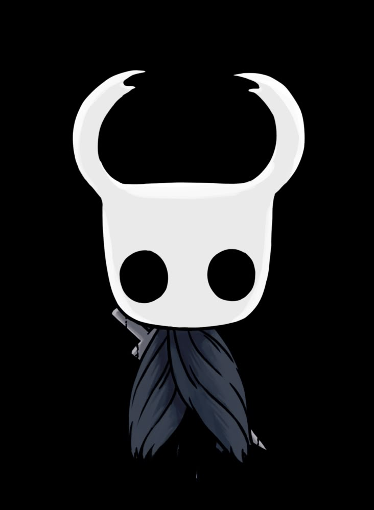
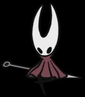
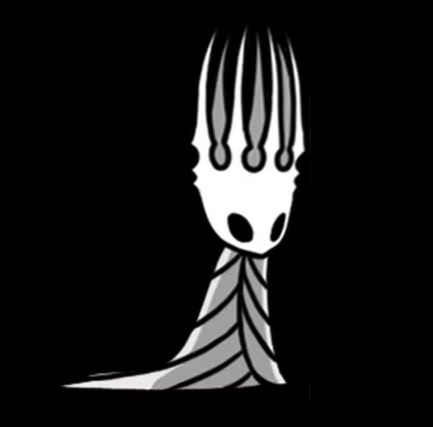
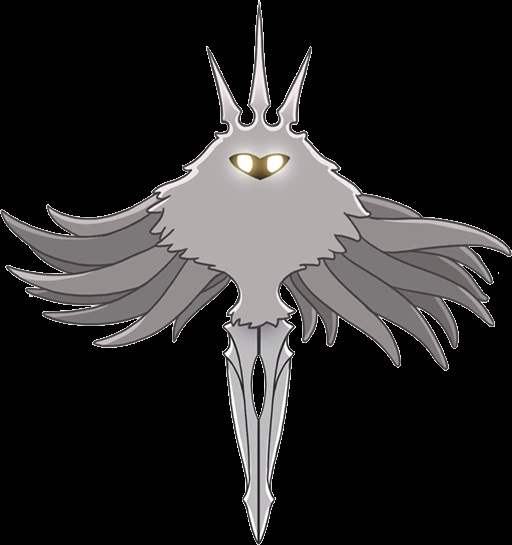

Personagens Principais

O Cavaleiro
O protagonista silencioso, um Receptáculo criado pelo Rei Pálido para conter a Infecção. Retorna a Hallownest sem memórias de seu propósito.

Hornet
Protetora das Ruínas do Reino, filha do Rei Pálido e Herrah a Besta. Testa a força do Cavaleiro em combates desafiadores.

Rei Pálido
O governante de Hallownest que trouxe civilização aos insetos. Criou os Receptáculos na tentativa de conter a Infecção.

A Radiância
Um deus esquecido dos insetos que corrompe a mente dos habitantes de Hallownest através da Infecção alaranjada.